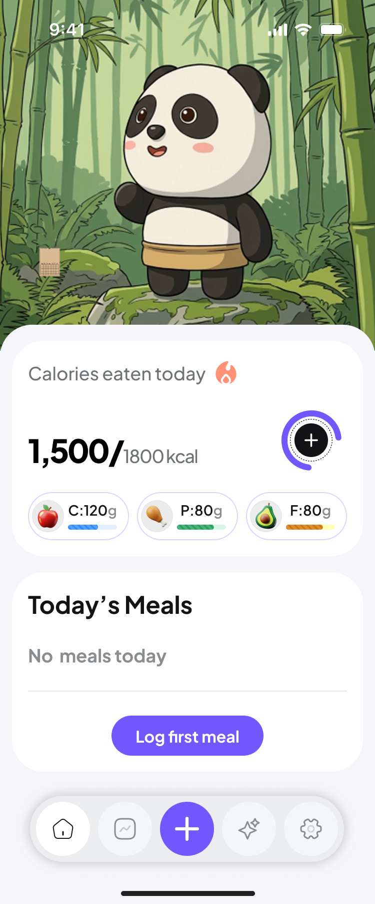
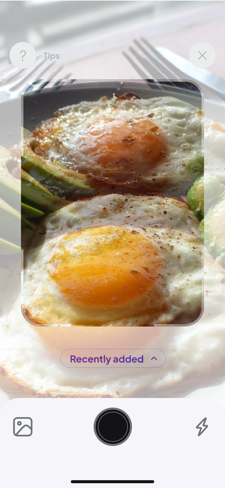

AI-powered nutrition tracking
The easiest way
to track what you eat
Whether you're cutting, bulking, or dieting — Yumisa makes tracking effortless

What's holding you back?
Tracking nutrition shouldn't be this hard
🏋️
Losing weight blindly
Without accurate calorie data, you can't create a deficit that actually works
💪
Bulking without a plan
Muscle growth needs a surplus and the right protein-fat-carb ratio
🥗
Quitting diets out of frustration
Manual logging takes too much time and kills your motivation
Yumisa does the hard part
You focus on your goal. We handle the numbers.
01
Skip the manual logging
Take a photo of your food or describe it by voice — AI determines calories and macros in a second
02
Data tailored to your goal
Deficit for weight loss, surplus for gaining, balance for dieting — all on one screen
03
So easy you'll actually stick with it
When tracking takes 5 seconds, motivation doesn't fade away
How it works

Snap a photo of your food
AI recognizes the dish and calculates calories and macros